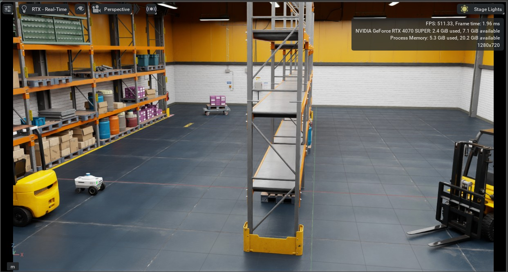 ::: {.callout-tip collapse=“true”} ## Video Walkthrough
:::
1 Simulation Setup and Kinematics Implementation
1.1 Robot Kinematics
Chosen Robot: Nova Carter
Kinematic Model: Differential Drive
Justification:
- Simplicity and ease of implementation
- Suitable for indoor environments and small-scale robotic platforms
- Precise control over direction and speed with minimal mechanical complexity
- Widely applicable for wheeled robots performing navigation tasks in structured environments
The kinematic model for differential drive robots, like the Nova Carter robot in this implementation, is expressed in Equation 1 and is responsible for explaining the movement of the robot. It describes how the robot’s position (x, y) and orientation θ evolve with respect to linear and angular velocities.
\[ \begin{aligned} \dot{x} &= v \cdot \cos(\theta) \\ \dot{y} &= v \cdot \sin(\theta) \\ \dot{\theta} &= \omega \end{aligned} \tag{1}\]
Where:
- v is the linear velocity (from the Twist message)
- ω is the angular velocity
- θ is the robot’s orientation
The wheel velocities \(v_r\) and \(v_l\) are derived using:
\[ \begin{aligned} v_r &= \frac{2v + \omega L}{2R} \\ v_l &= \frac{2v - \omega L}{2R} \end{aligned} \tag{2}\]
Where:
- L = 0.413m (wheel distance)
- R = 0.14m (wheel radius)
The simulated environment, discussed in greater detail in the next section (Section 1.2), is run in Isaac Sim. Isaac Sim’s differential drive model uses OmniGraph nodes, specifically the Differential Controller Node, to compute wheel velocities from linear and angular velocity inputs using the wheel velocity equations (Equation 2) and kinematic parameters specified in the node (Figure 1). The differential drive path controller MATLAB script calculates linear and angular velocities from target positions in the planned path and sends these to the controller in Isaac Sim through a ROS2 bridge.
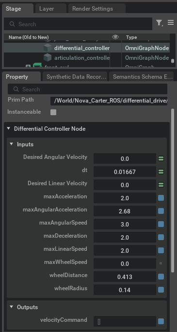
Kinematic Parameters:
- wheelDistance: 0.413 meters (distance between the wheels)
- wheelRadius: 0.14 meters (radius of the wheels)
- maxLinearSpeed: 2.0 m/s
- maxAngularSpeed: 3.0 rad/s
- maxAcceleration / maxDeceleration: 2.0 m/s² (limits for smooth motion)
- dt: 0.01667 (time step, approximately 60 Hz simulation rate)
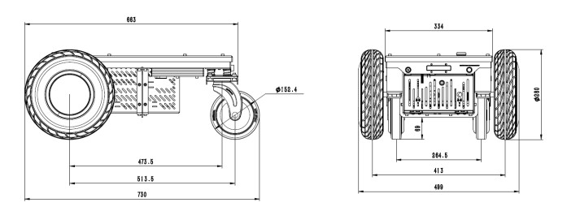
1.2 Environment Setup
The environment is simulated within Isaac Sim as it provides a realistic scene which is highly useful for practically applying theoretical robotics concepts. Isaac Sim is a high-fidelity physics engine that is capable of simulating commercial and industrial robots, robotic movement, and sensor data making it a prime candidate for this simulation (Nvidia Omniverse IsaacSim, 2025). The scene is a warehouse with forklifts, pallets, and shelving for the robot to navigate through. These static obstacles have been placed to create a maze-like environment that the robot can plan paths and navigate through. On running the main MATLAB script, a robot object is created and given a goal position to navigate to. The user can observe the robot moving towards the specified goal through the viewport in Isaac Sim (Figure 3), front camera viewport in RViz2 (Figure 4), and the robot’s occupancy map displaying the planned path and the robot’s pose along the way (Figure 5).
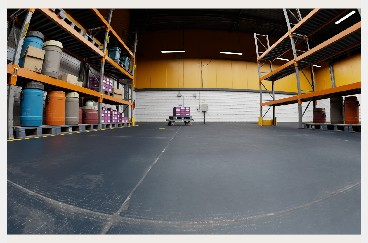
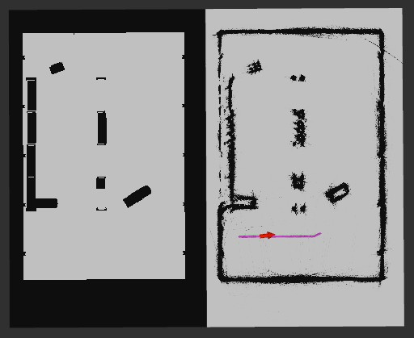
2 Sensor Integration and Data Acquisition
2.1 Sensor Selection
Chassis Odometry Sensor: Collects position (x, y) and quaternion orientation (x, y, z, w) based on wheel encoder data, used in combination with IMU for more accurate localization. GPS signals are significantly weakened or blocked by warehouse roofs, walls, and metal racking (Ghasemieh, A. and Kashef, R., 2024, p. 2, para. 3). On the other hand, odometry works independently of external signals, making it ideal for indoor environments. GPS typically has 5-10 meter accuracy, while odometry typically achieves centimeter-level precision for short distances (Ghasemieh, A. and Kashef, R., 2024, p. 3, para. 1). This precision is crucial for warehouse operations like navigating narrow aisles. Odometry provides immediate feedback while GPS can have significant delay in position updates. This allows for quick response time, which is essential for obstacle avoidance and precise positioning. The system compensates for odometry’s main weakness, drift, by fusing it with IMU data through the Extended Kalman Filter and using LiDAR for correction against discovered landmarks.
Chassis IMU Sensor: Is a combined sensor package that usually includes accelerometers (measuring linear acceleration) and gyroscopes (measuring angular velocity/rotation). These measurements are particularly valuable for detecting rapid changes in the robot’s motion and helping to correct for wheel slippage that might occur on the warehouse floor. The acceleration data is integrated over time to estimate velocity, while the angular velocity provides direct measurement of the robot’s rotation rate. The advantage of using an IMU in a warehouse setting is that it combines these sensors into a single calibrated package. Because of this, accelerometer and gyroscope readings are perfectly synchronized with a single timestamp for all measurements making it easier for sensor fusion. Sensors are pre-calibrated relative to each other ensuring alignment between acceleration and rotation axes. Finally, there is considerable space and cost efficiency in using a single component for mounting and wiring.
Front 2D LiDAR Sensor: Measures distances in a single horizontal plane with accompanying angle of measurement. 2D LiDAR generates significantly less data to process than a 3D LiDAR sensor which allows for more responsive occupancy grid updates. Real-time performance is crucial for warehouse navigations that include dynamic obstacles. This data undergoes several processing steps, including range validation and conversion to Cartesian coordinates, before being used to update the robot’s internal map and assist in obstacle avoidance.
2.2 Data Acquisition
The heart of our data collection system lies in its ROS2-based architecture. ROS2 provides a robust framework for handling real-time sensor data through its publisher-subscriber model (Carreira, R. et al., 2024, pp. 11-12). Each sensor communicates through dedicated ROS2 topics controlled with a precise timing mechanism that ensures consistent data sampling across all sensors. Operating at 60Hz (with a time step of 0.01667 seconds), this timer-based approach synchronizes data collection and processing, crucial for maintaining accurate state estimation. This high update rate allows the robot to respond quickly to changes in its environment while maintaining smooth motion control. To facilitate system analysis and improvement, we’ve implemented a comprehensive data logging system. This system records not only the raw sensor readings but also the processed state estimates and ground truth data for comparison. The logged data proves invaluable for post-mission analysis, allowing us to evaluate system performance and identify areas for improvement.
3 Sensor Fusion Using Extended Kalman Filter (EKF)
3.1 Fusion Techniques
The Standard Kalman Filter assumes the state transition and observation models are linear. The kinematic model employed for the differential drive is inherently non-linear due to the trigonometric functions cos(θ) and sin(θ) (Equation 1). The state transition model (Equation 4) describes transitions from states by combining the state definition (Equation 3) with the non-linear kinematic model (Equation 1). EKF solves this problem by linearizing the non-linear system at each time step by computing Jacobian matrices (Jiang, L. and Wu, L., 2024, p. 2, para. 1). The state transition Jacobian matrix (Equation 5) is calculated by considering the state transition model (Equation 4) as f(x) and finding the partial derivatives for each function of f(x) with respect to each term in the state definition model (Equation 3).
\[ \mathbf{x} = \begin{bmatrix} x \\ y \\ \theta \\ v \\ \omega \end{bmatrix} \tag{3}\]
\[ \begin{aligned} x_{k+1} &= x_k + v \cdot \Delta t \cdot \cos(\theta) \\ y_{k+1} &= y_k + v \cdot \Delta t \cdot \sin(\theta) \\ \theta_{k+1} &= \theta_k + \omega \cdot \Delta t \\ v_{k+1} &= v_k \\ \omega_{k+1} &= \omega_k \end{aligned} \tag{4}\]
\[ \mathbf{F} = \begin{bmatrix} 1 & 0 & -v \cdot \Delta t \cdot \sin(\theta) & \Delta t \cdot \cos(\theta) & 0 \\ 0 & 1 & v \cdot \Delta t \cdot \cos(\theta) & \Delta t \cdot \sin(\theta) & 0 \\ 0 & 0 & 1 & 0 & \Delta t \\ 0 & 0 & 0 & 1 & 0 \\ 0 & 0 & 0 & 0 & 1 \end{bmatrix} \tag{5}\]
The observation models are linear, and we add measurement noise to explain the uncertainty in the readings from the sensors for things like drift or wheel slippage (Equation 6 & Equation 7). Since we need to perform matrix calculations because of having to linearize the state transition model with a Jacobian matrix, we also need to use Jacobians of the observation models to apply to the state transition Jacobian (Equation 5). The observation model Jacobians (Equation 8 & Equation 9) are calculated by considering the observation models (Equation 6 & Equation 7) as h(x) and finding the partial derivatives for each function of h(x) with respect to each term in the state definition model (Equation 3).
\[ \mathbf{z}_{odom} = \mathbf{h}_{odom}(\mathbf{x}) = \begin{bmatrix} x \\ y \\ \theta \\ v \\ \omega \end{bmatrix} \tag{6}\]
\[ \mathbf{z}_{imu} = \mathbf{h}_{imu}(\mathbf{x}) = \begin{bmatrix} v \\ \omega \end{bmatrix} \tag{7}\]
\[ \mathbf{H}_{odom} = \frac{\partial \mathbf{h}_{odom}}{\partial \mathbf{x}} = \begin{bmatrix} 1 & 0 & 0 & 0 & 0 \\ 0 & 1 & 0 & 0 & 0 \\ 0 & 0 & 1 & 0 & 0 \\ 0 & 0 & 0 & 1 & 0 \\ 0 & 0 & 0 & 0 & 1 \end{bmatrix} \tag{8}\]
\[ \mathbf{H}_{imu} = \frac{\partial \mathbf{h}_{imu}}{\partial \mathbf{x}} = \begin{bmatrix} 0 & 0 & 0 & 1 & 0 \\ 0 & 0 & 0 & 0 & 1 \end{bmatrix} \tag{9}\]
Finally, we perform the prediction step of the state transition where we apply the process noise to the state transition Jacobian to model the uncertainty of the prediction and update the predicted state covariance (Equation 10). Then we incorporate the measurement. Then we update the observed measurements using the observation Jacobians, measurement noise, and predicted state covariance to create the Kalman gain filter. This filter is then used to weigh the contribution of the predicted state transition against the measurement observations in the final outcome of the state prediction. The filter bases these contributions of the predicted state transition and measurement observations on the respective covariances, or the uncertainty, of each (Equation 11).*
\[ \begin{aligned} \mathbf{x}_{k+1|k} &= \mathbf{F} \cdot \mathbf{x}_k \\ \mathbf{P}_{k+1|k} &= \mathbf{F} \cdot \mathbf{P}_k \cdot \mathbf{F}^T + \mathbf{Q} \end{aligned} \tag{10}\]
\[ \begin{aligned} \mathbf{y} &= \mathbf{z} - \mathbf{H} \cdot \mathbf{x}_{k+1|k} \\ \mathbf{S} &= \mathbf{H} \cdot \mathbf{P}_{k+1|k} \cdot \mathbf{H}^T + \mathbf{R} \\ \mathbf{K} &= \mathbf{P}_{k+1|k} \cdot \mathbf{H}^T \cdot \mathbf{S}^{-1} \\ \mathbf{x}_{k+1} &= \mathbf{x}_{k+1|k} + \mathbf{K} \cdot \mathbf{y} \\ \mathbf{P}_{k+1} &= (\mathbf{I} - \mathbf{K} \cdot \mathbf{H}) \cdot \mathbf{P}_{k+1|k} \end{aligned} \tag{11}\]
*This measurement update step is done twice in the code implementation, once for the odometry measurements and again for IMU measurements.
3.2 Application in Navigation
Ultimately, EKF is an appropriate method for sensor fusion in this case because it can effectively combine IMU and Odometry readings to improve state estimation and subsequent navigation accuracy. Not only this, EKF can simultaneously handle the non-linearity introduced by the state transition model to produce a reasonable level of accuracy for the task of navigating in a warehouse environment. Artificial Neural Networks (ANNs) are another viable option for sensor fusion as they too can combine sensor readings and manage non-linear associations quite well. However, ANNs are typically more computationally expensive than EKF and require an undetermined amount of training and fine tuning to produce sufficient accuracy resulting in longer development durations. As a result, EKF has been used in this simulation to produce a lightweight and accurate solution suitable for the hardware resource and real-time computational constraints of the project.
As seen depicted in Figure 6, EKF sensor fusion provides the robot with accurate enough pose estimations, in relation to ground truth, to allow for the robot to make properly informed decisions about velocities and headings. Whereas, when the robot does not have a consistent and accurate idea of where it is and how it is oriented in space the velocity adjusts become more erratic and susceptible to bias over time. The redundancy provided by data collected from multiple sensors measuring similar types of orientation information provides a navigation framework that is resilient against sensor noise and/or failure. Individual sensor noise fluctuations are not correlated with one another, permitting a more well-rounded estimation of state at any given time. We will delve into how well this EKF implementation performs by examining in comparison with alternate methods of pose estimation.

4 Simulation Results and Comparison
4.1 Performance Metrics
We provide three (3) different modes of state estimation to compare the effects of measurement noise on navigation and to illustrate just how effective EKF is at addressing this. First, a dead reckoning implementation that uses only control inputs and the state transition function to track orientation and navigate. Second, odometry-only state estimation that doesn’t compensate for the simulated sensor noise of the odometer. Lastly, the EKF solution that fuses odometry and IMU readings, models sensor and process uncertainty, and that elegantly combines state transition predictions with the observed measurements. We will look at:
How accurate the modes are at estimating their state in comparison with the ground truth state.
How accurate the modes are at following the planned path, calculated from an A* algorithm taken from the MATLAB robotics toolbox. This will be a comparison of the ground truth and the planned path as the ground truth is a representation of what the robot actually did.
Navigation and path error probability distributions, bar charts depicting mean and maximum path deviation, path length, completion time.
4.2 Analysis of Results
As can be seen in Figure 7 and Figure 8, dead reckoning is highly inaccurate in pose estimation and is subsequently unable to follow the planned path in any practical capacity. It seems that without sensor data to interoceptively inform the robot of its orientation it is overcome by sensor noise, bias, and process noise.
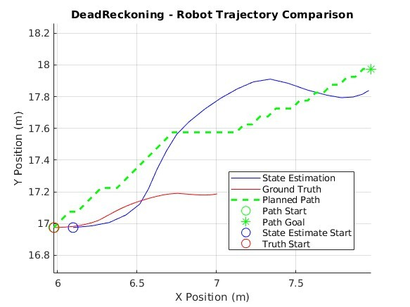
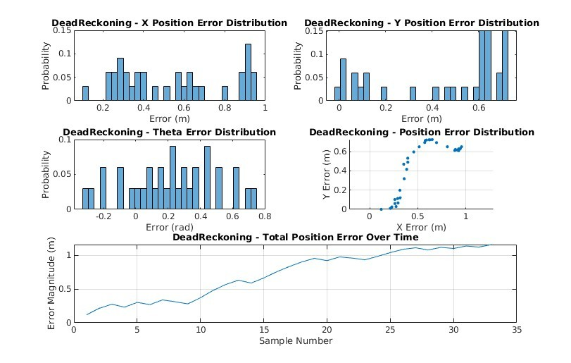
Odometry-only is a marked improvement over dead reckoning on all accounts and performs reasonably well considering we are only using one (1) sensor (Figure 9 & Figure 10). The robot’s state estimation is erratic but not so much so that it cannot follow the planned path to reach the goal pose. This mode of estimation may be sufficient in certain environments and with sensors that do not produce high levels of noise. However, as sensor noise increases the performance of this mode of estimation decreases, causing many overcompensations to velocities and heading (Figure 11). These frequent and powerful corrections would likely cause more wear and tear on the vehicle.
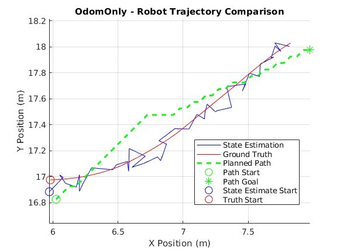
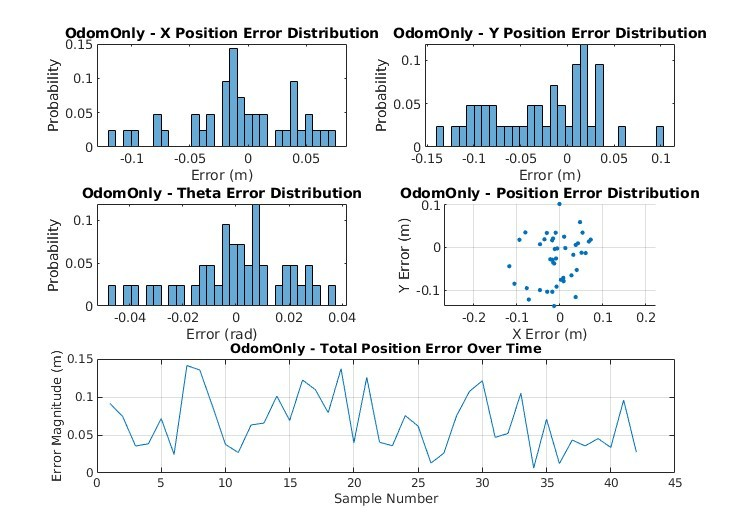
The EKF solution performs the best of all three (3), showcasing a robust ability to handle measurement noise in real-time. This mode of state estimation boasts the least amount of error in all metrics across the board with the exception of completion time. EKF produces tighter error probability distributions with equal or lower magnitudes than the other modes of state estimation. The EKF ground truth has a maximum deviation from the planned path almost half that of, and even a few points away from being equal to the mean deviation of the odometry-only solution (Table 2). As we manually increase measurement noise, we can see how the EKF still maintains stability and accuracy while odometry-only suffers from even greater fluctuations in state estimation (Figure 16 & Figure 17). Even though EKFs tend to be computationally expensive they do produce remarkable results in contexts like these (Vitali, R.V., McGinnis, R.S. and Perkins, N.C., 2021, pp. 1-2).
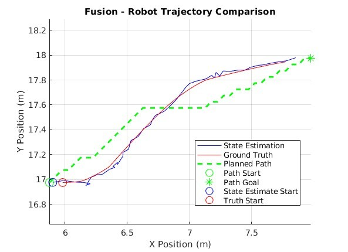
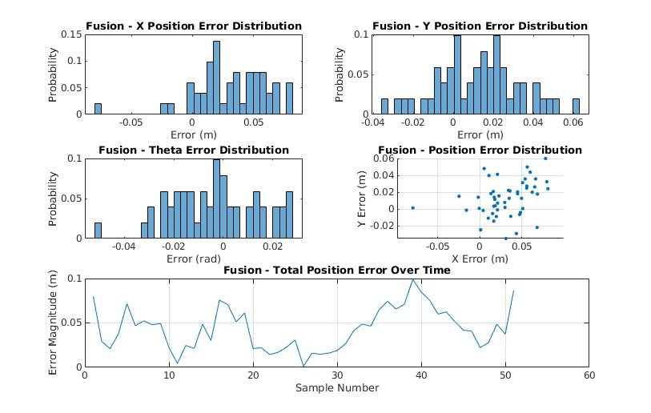
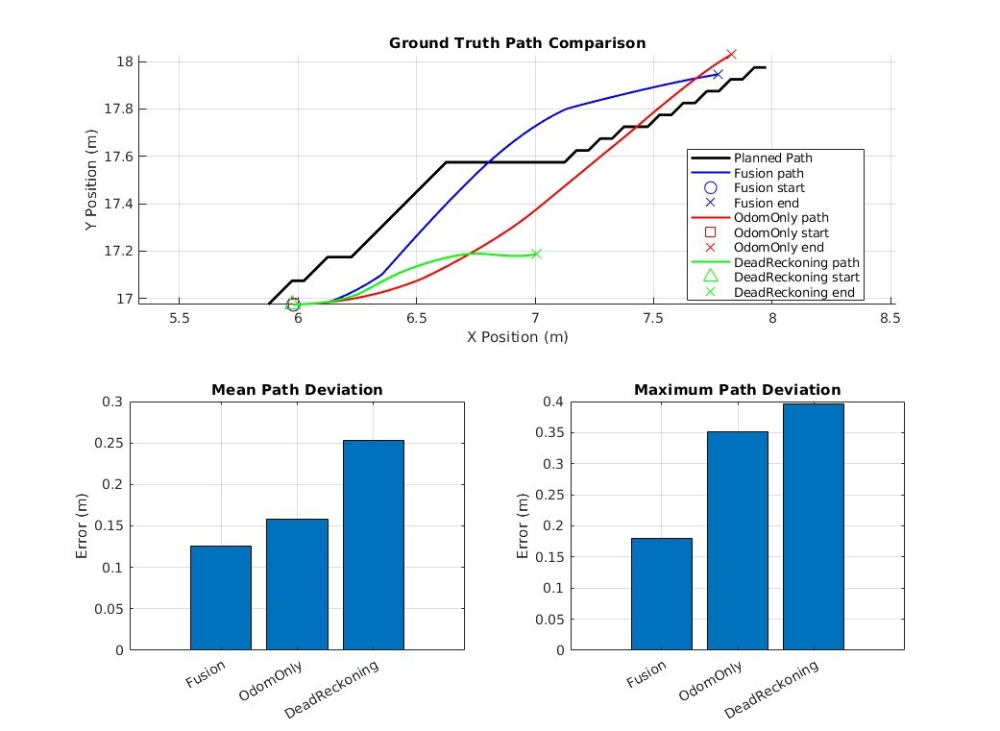
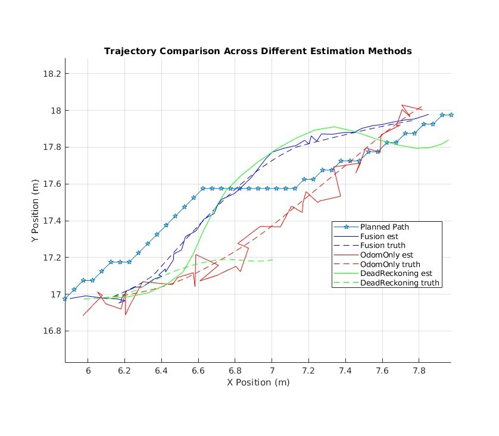
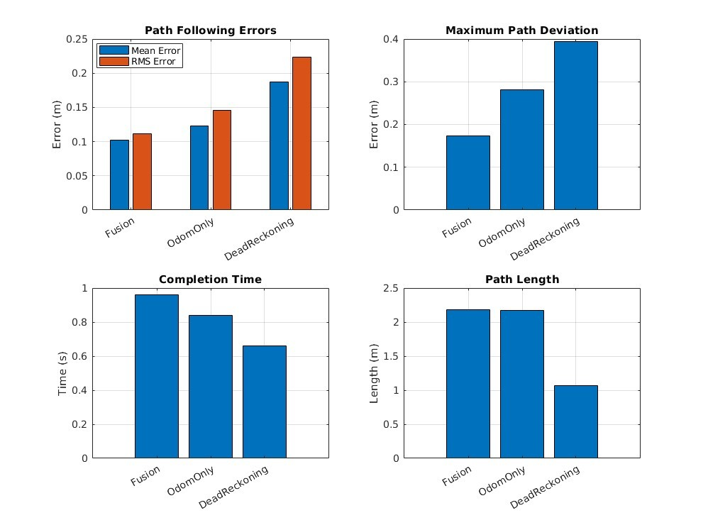
| Method | Mean Position Error (m) | RMS Position Error (m) | Mean Heading Error (rad) | RMS Heading Error (rad) |
|---|---|---|---|---|
| Fusion | 0.043518 | 0.049445 | 0.014593 | 0.017925 |
| Odometry Only | 0.066875 | 0.076514 | 0.015236 | 0.019748 |
| Dead Reckoning | 0.72064 | 0.79609 | 0.29554 | 0.35184 |
| Method | Mean Deviation (m) | Max Deviation (m) | Path Length (m) | Completion Time (s) | Path Smoothness (avg heading change) | Time within 0.1m | Time within 0.2m | Time within 0.5m |
|---|---|---|---|---|---|---|---|---|
| Fusion | 0.12613 | 0.18047 | 2.1128 | 0.96 | 0.030647 rad | 23.5294% | 100% | 100% |
| Odometry Only | 0.1577 | 0.35182 | 2.172 | 0.84 | 0.021918 rad | 42.8571% | 66.6667% | 100% |
| Dead Reckoning | 0.25327 | 0.39551 | 1.0653 | 0.68 | 0.042377 rad | 6.0606% | 45.4545% | 100% |
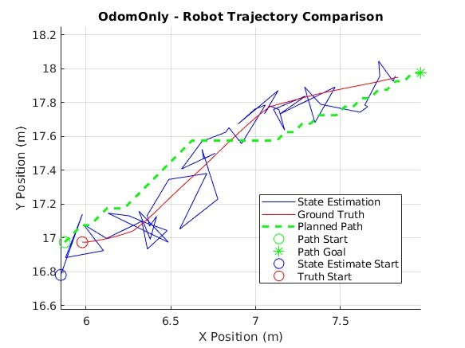
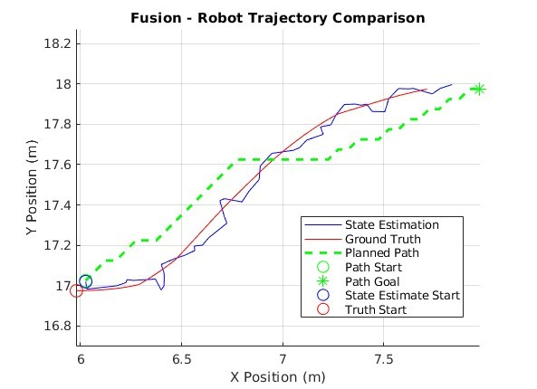
5 Evaluation and Improvement Suggestions
5.1 Critical Evaluation
While EKF clearly outperforms the other methods of state estimation explored in this paper, it is not without its challenges. Tuning the process noise manually is a time-consuming trial-and-error endeavor even with data analytics to inform the adjustments. Meanwhile, deploying and developing Artificial Neural Networks (ANN) are becoming easier with support from libraries like PyTorch and are more than capable of handling the non-linear nature of state estimations and transitions (Ghorbani, S. and Janabi-Sharifi, F., 2022, p.1, para. 5). The current EKF implementation could take more full advantage of the IMU and odometry orientation data by processing quaternion information directly using quaternion specific equations rather than converting the quaternion to θ at the time of collection (Vitali, R.V., McGinnis, R.S. and Perkins, N.C., 2021, pp. 2-6).
As stated previously, the robot uses a 2D LiDAR sensor to update its internal occupancy map which is crucial for navigating a dynamic environment like a warehouse. The horizontal orientation of the obstacle detection provided by this sensor presents issues in this context. Even though the sensor is effectively mapping most of the obstacles in the environment it is missing a key feature that results in collisions. If forklift forks are raised off the ground, then the LiDAR doesn’t detect these long protrusions which routinely causes collisions with the robot. Compounding the situation further, the robot’s occupancy map cannot be inflated as each time the LiDAR updates the map it would have to call the inflate method causing already inflated objects to continue to grow until enveloping the entire map. The current A* algorithm being used doesn’t have a minimum turning radius property, therefore, the planner charts paths that bring the robot too close to objects causing collisions, even with obstacles it registers in its occupancy map. Using a high-fidelity simulation engine like Isaac Sim pushes these kinds of real-world challenges to the fore providing the opportunity to address these in a simulated environment before deployment. In conjunction with this, usage of the ROS2 bridge for the environment setup facilitates easy portability to real-world applications (Carreira, R. et al., 2024, pp. 5-8).
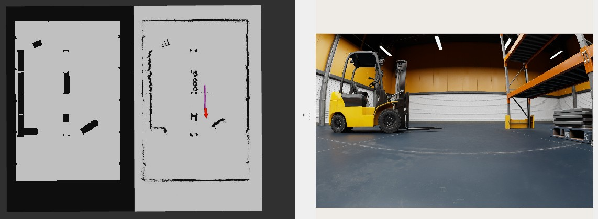
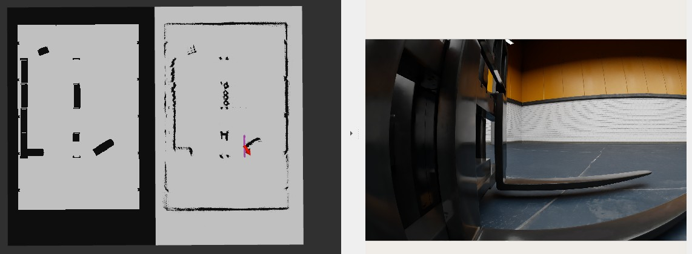
5.2 Improvements
A more comprehensive obstacle detection system is required before this implementation could be used for real world applications. The Nova Carter robot does have a 3D LiDAR sensor which would be more than capable of addressing the forklift forks issue. Or a YOLOv8n vision model, custom trained to detect forklifts, could be used in combination with the front camera to identify forklifts and mark the area around the forks on the robot’s occupancy map (Jiang, L. and Wu, L., 2024, pp. 10-13). Also, the plannerHybridAStar tool in the MATLAB robotics toolbox would effectively address the obstacle avoidance issues that are currently experienced.
References
Carreira, R. et al. (2024) “A ROS2-Based Gateway for Modular Hardware Usage in Heterogeneous Environments,” Sensors (Basel, Switzerland), 24(19). Available at: https://doi.org/10.3390/s24196341.
Ghasemieh, A. and Kashef, R. (2024) “Towards explainable artificial intelligence in deep vision-based odometry,” Computers and Electrical Engineering, 115. Available at: https://doi.org/10.1016/j.compeleceng.2024.109127.
Ghorbani, S. and Janabi-Sharifi, F. (2022) “Extended Kalman Filter State Estimation for Aerial Continuum Manipulation Systems,” IEEE Sensors Letters, 6(8). Available at: https://doi.org/10.1109/LSENS.2022.3190890.
Jiang, L. and Wu, L. (2024) “Enhanced Yolov8 network with Extended Kalman Filter for wildlife detection and tracking in complex environments,” Ecological Informatics, 84. Available at: https://doi.org/10.1016/j.ecoinf.2024.102856.
Nvidia Omniverse IsaacSim (2025) Isaac Sim Reference Architecture. Available at: https://docs.omniverse.nvidia.com/isaacsim/latest/isaac_sim_reference_architecture.html#isaac-sim-reference-architecture (Accessed: 11 January 2025).
Vitali, R.V., McGinnis, R.S. and Perkins, N.C. (2021) “Robust Error-State Kalman Filter for Estimating IMU Orientation,” IEEE Sensors Journal, 21(3). Available at: https://doi.org/10.1109/JSEN.2020.3026895.
portfolio - Sensor Fusion Using EKF for Navigation and Path Planning portfolio - Sensor Fusion Using EKF for Navigation and Path Planning portfolio - Sensor Fusion Using EKF for Navigation and Path Planning portfolio Implementation of sensor fusion using Extended Kalman Filter for autonomous robot navigation and path planning in warehouse environments using Isaac Sim. Implementation of sensor fusion using Extended Kalman Filter for autonomous robot navigation and path planning in warehouse environments using Isaac Sim.